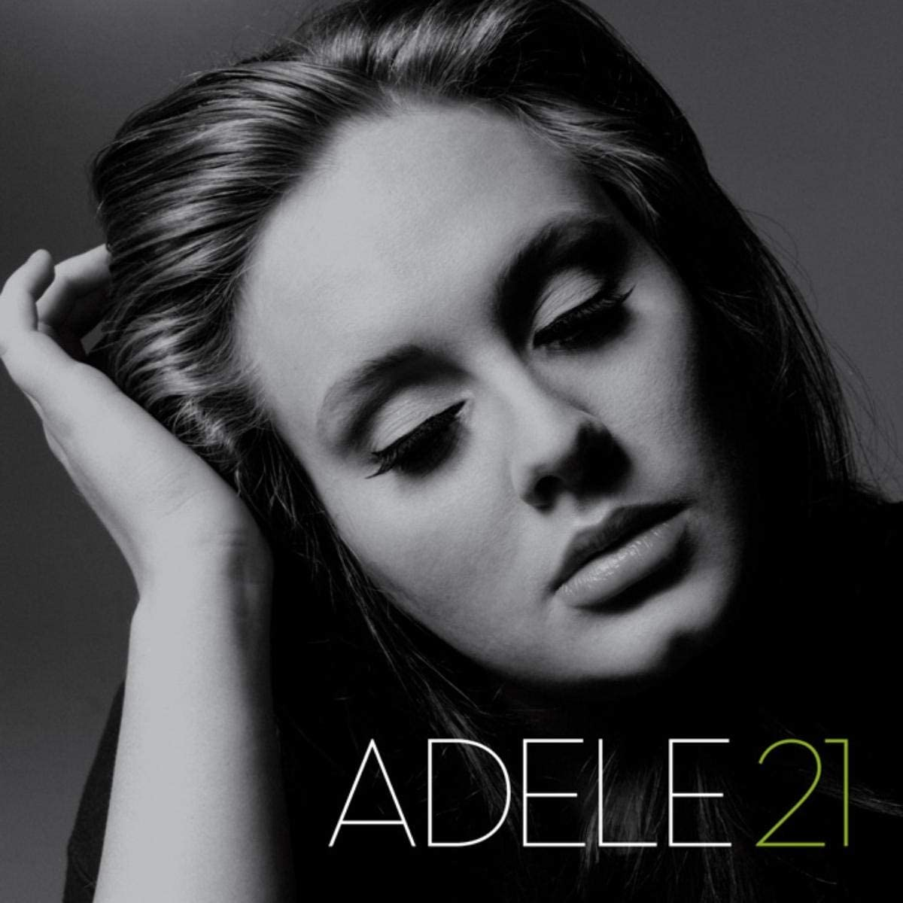

Welcome Index ES
Titanic

Siendo construido entre 1909 y 1912 en los astilleros de Harland & Wolff de Belfast, el Titanic constituía el segundo buque de un trío de grandes transatlánticos (siendo el primero el RMS Olympic y el tercero el HMHS Britannic), propiedad de la compañía naviera White Star Line, conocidos como la clase Olympic.
Matrix

The Matrix (conocida como Matrix en Hispanoamérica) es una película de acción y ciencia ficción de 1999 escrita y dirigida por las hermanas Wachowski y protagonizada por Keanu Reeves, Laurence Fishburne, Carrie-Anne Moss y Hugo Weaving. Representa un futuro distópico en el que la humanidad está atrapada sin saberlo dentro de una realidad simulada llamada Matrix, que las máquinas inteligentes han creado para distraer a los humanos mientras usan sus cuerpos como fuente de energía en campos de cultivo.
Avatar

Avatar (comercializada como Avatar de James Cameron) es una película épica de ciencia ficción militar, Animación y estadounidense de 2009,67 escrita, producida y dirigida por James Cameron y protagonizada por Sam Worthington, Zoe Saldaña, Sigourney Weaver, Stephen Lang y Michelle Rodriguez.
Hulk

Hulk es una película de 2003 basada en el personaje ficticio de Marvel Comics del mismo nombre.2 Ang Lee dirigió el filme, que es protagonizado por Eric Bana como el Dr. Bruce Banner, así como Jennifer Connelly, Sam Elliott, Nick Nolte y Josh Lucas.
All American

All American es una serie de televisión de drama deportivo estadounidense, creada por April Blair que se estrenó en The CW el 10 de octubre de 2018. La serie está inspirada en la vida del jugador profesional de fútbol americano Spencer Paysinger, con Daniel Ezra en el papel principal. En enero de 2020, The CW renovó la serie para una tercera temporada que se estrenó el 18 de enero de 2021.
The Big Bang Theory

The Big Bang Theory (también conocida como La teoría del Big Bang en Hispanoamérica o Big Bang en ingles) es una comedia de situación estadounidense estrenada el 24 de septiembre de 2007 y finalizada el 16 de mayo de 2019 por la cadena CBS. Fue producida por la Warner Bros y Chuck Lorre.
How to Get Away with Murder

How to Get Away with Murder (Cómo defender a un asesino en España y Lecciones del crimen en Hispanoamérica ) es una serie televisiva estadounidense de drama legal creada por Peter Nowalk y producida por Shonda Rhimes para la cadena ABC, estrenada el 25 de septiembre de 2014.
The Simpsons

Los Simpson (en inglés: The Simpsons) es una serie estadounidense de comedia, en formato de animación, creada por Matt Groening para Fox Broadcasting Company y emitida en varios países del mundo. La serie es una sátira de la sociedad estadounidense que narra la vida y el día a día de una familia de clase media de ese país (cuyos miembros son Homer, Marge, Bart, Lisa y Maggie Simpson) que vive en un pueblo ficticio llamado Springfield.
Adele 21

Adele Laurie Blue Adkins (Londres, 5 de mayo de 1988), conocida simplemente como Adele, es una cantautora y multinstrumentista británica. Es una de las artistas musicales con mayores ventas del mundo, con más de 120 millones de ventas entre discos y sencillos.
Linkin Park

Linkin Park es una banda estadounidense de rock alternativo procedente de Agoura Hills, California formada en 1996. Integrada por Mike Shinoda, Dave Farrell, Joe Hahn, Brad Delson, Rob Bourdon y Chester Bennington, este último como voz principal.
Learn about building Web apps with ASP.NET Core.